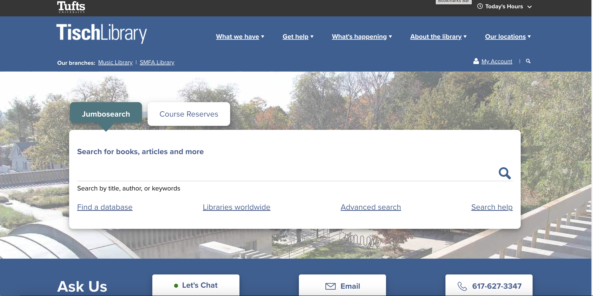
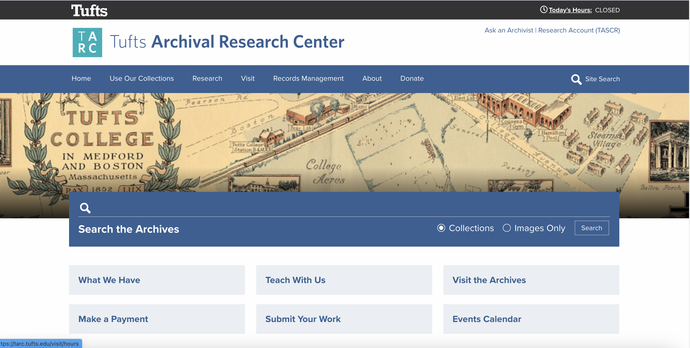
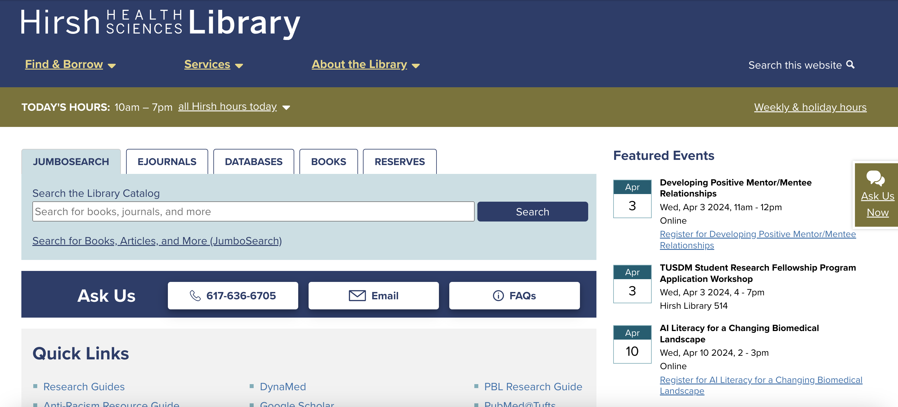

- Web Developer at Tufts University
- Builds and customizes Drupal, Wordpress sites and React apps
- Creates custom themes, plugins and modules, including features for content authors
- Understands accessibility needs and how to find and fix problems
- Good collaborator
Examples of work

Tisch Library Website, Drupal 10
Tarc website, Drupal 10

Hirsh Library website